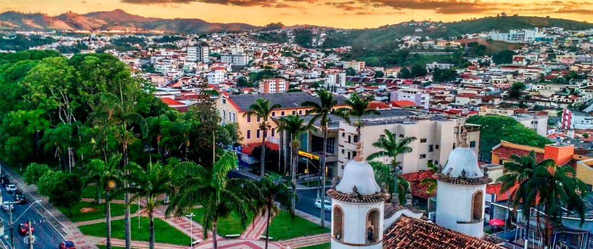

Campo Belo é uma cidade de Estado do Minas Gerais. Os habitantes se chamam campo-belenses. O município se estende por 528,2 km² e contava com 54 029 habitantes no último censo. A densidade demográfica é de 102,3 habitantes por km² no território do município. Vizinho dos municípios de Santana do Jacaré, Candeias e Aguanil,Campo Belo se situa a 48 km a Sul-Leste de Formiga. Situado a 831 metros de altitude, de Campo Belo tem as seguintes coordenadas geográficas: Latitude: 20° 51' 57'' Sul, Longitude: 45° 16' 24'' Oeste.
